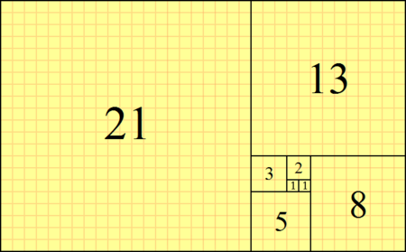

Thoughts on the Fibonacci sequence in the complex mathematical systems
Fibonacci's sequence was found by Leonardo Fibonacci in 12th century, you've surely seen it...
It goes like this 1,1,2,3,5,8,13,21 and so on... in it you add up the previous number with the current one for example, we have 1,1 in the beginning
because 0+1=1, 1+1=2 and so on... The interesting thing in it is that this pattern is often seen in nature for example, flowers or galaxies... but the topic of this article is
Fibonacci's sequence in the Mandelbrot set. 
Mandelbrot's set is a complicated matter, complicated stuff but we attempted to simplify it in this article for the sake of simplicity...
So .. Mandelbrot's set basically looks like this and if you say So where's fibonacci here...
You would be completely right to ask such a question!
 say we have this same diagram but on a coordinate system, the Complex numbers( C in our case ) would be located on the X plane of the coordinate system(the horizontal one) and if we have a function z^2 + c and say C = -1, then we look at the function then we plug in 0, which in the function gives us -1, then we plug in -1 -1 which is again zero, so these numbers are in the mandelbrot set
so as much as we try to get these numbers(0 and -1) out of the manedlbrot set we can't.. they're just in.. so where is the fibonacci sequence?.
So we see the small things on the end of the big part of the mandelbrot set and they're called hyperbolic components, they have antennas which have even smaller components and it keeps on going on and on and on .. it is recursive(repeative)
and if you start zooming into the mandelbrot set, more like into it's components you'd see each number from the fibonacci sequence in it.
so there's also another example of the fibonacci sequence in the mandelbrot set. Well if we assign fractions to each of the components then the first one would be represented by 1/2, the second one would be represented by 2/3 and the one in the middle will be represented by the sum of the 2 around it(in this case 2/5)
it is called "The freshman sum" in which you get the mediant of the fractions . so... 1/2 < ? < 2/3 the answer to this one is 3/5. and you go on and on and on until you notice the fibonacci sequence..
Written byMartin Yordanov
say we have this same diagram but on a coordinate system, the Complex numbers( C in our case ) would be located on the X plane of the coordinate system(the horizontal one) and if we have a function z^2 + c and say C = -1, then we look at the function then we plug in 0, which in the function gives us -1, then we plug in -1 -1 which is again zero, so these numbers are in the mandelbrot set
so as much as we try to get these numbers(0 and -1) out of the manedlbrot set we can't.. they're just in.. so where is the fibonacci sequence?.
So we see the small things on the end of the big part of the mandelbrot set and they're called hyperbolic components, they have antennas which have even smaller components and it keeps on going on and on and on .. it is recursive(repeative)
and if you start zooming into the mandelbrot set, more like into it's components you'd see each number from the fibonacci sequence in it.
so there's also another example of the fibonacci sequence in the mandelbrot set. Well if we assign fractions to each of the components then the first one would be represented by 1/2, the second one would be represented by 2/3 and the one in the middle will be represented by the sum of the 2 around it(in this case 2/5)
it is called "The freshman sum" in which you get the mediant of the fractions . so... 1/2 < ? < 2/3 the answer to this one is 3/5. and you go on and on and on until you notice the fibonacci sequence..
Written byMartin Yordanov